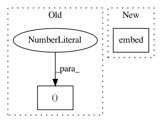

120b9f6d5bb7c0c7dde5fb60cdb503dddaeb03a0,geomstats/geometry/special_euclidean.py,_SpecialEuclideanVectors,matrix_from_vector,#_SpecialEuclideanVectors#Any#,305
Before Change
trans_vec = vec[:, self.rotations.dim:]
rot_mat = self.rotations.matrix_from_rotation_vector(rot_vec)
trans_vec = gs.reshape(trans_vec, (n_vecs, self.n, 1))
mat = gs.concatenate((rot_mat, trans_vec), axis=2)
last_lines = gs.array(gs.get_mask_i_float(self.n, self.n + 1))
last_lines = gs.to_ndarray(last_lines, to_ndim=2)
After Change
trans_vec = vec[..., self.rotations.dim:]
rot_mat = self.rotations.matrix_from_rotation_vector(rot_vec)
return embed(rot_mat, trans_vec, output_shape)
@geomstats.vectorization.decorator(
["else", "vector", "vector"])
def compose(self, point_a, point_b):
In pattern: SUPERPATTERN
Frequency: 3
Non-data size: 2
Instances
Project Name: geomstats/geomstats
Commit Name: 120b9f6d5bb7c0c7dde5fb60cdb503dddaeb03a0
Time: 2020-11-16
Author: nicolas.guigui@inria.fr
File Name: geomstats/geometry/special_euclidean.py
Class Name: _SpecialEuclideanVectors
Method Name: matrix_from_vector
Project Name: geomstats/geomstats
Commit Name: 120b9f6d5bb7c0c7dde5fb60cdb503dddaeb03a0
Time: 2020-11-16
Author: nicolas.guigui@inria.fr
File Name: geomstats/geometry/special_euclidean.py
Class Name: _SpecialEuclideanMatrices
Method Name: random_uniform
Project Name: IndicoDataSolutions/finetune
Commit Name: 60d6af96c3892125c77ab621da80f03d23985a98
Time: 2020-03-17
Author: benlt@hotmail.co.uk
File Name: finetune/base_models/gpt/featurizer.py
Class Name:
Method Name: gpt_featurizer